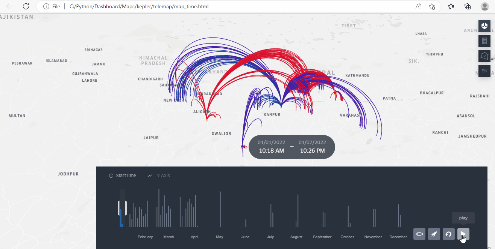
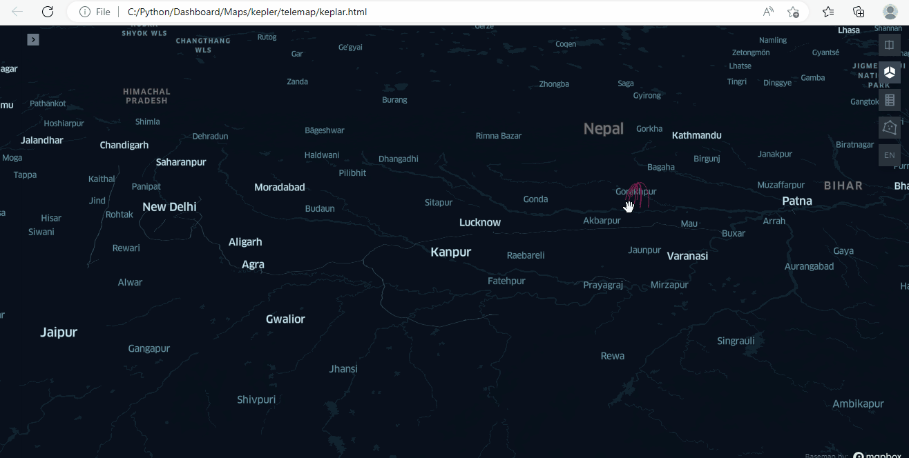
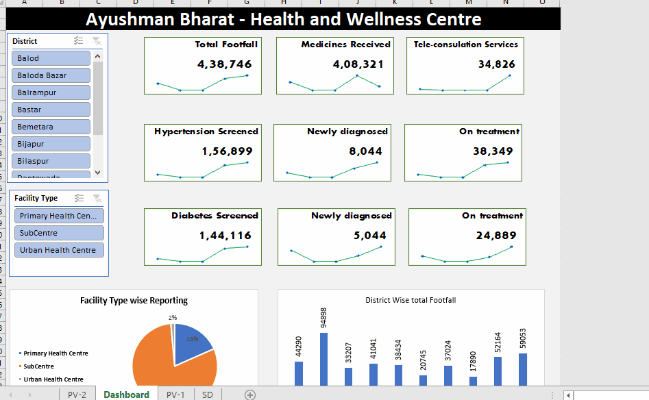

Teleconsultation map Hub and Spoke: WIth time period every call detail showing on map

Teleconsultation map displays call details on a map with their respective time periods, enabling analysis of call frequency and the number of calls made in each area. With over 100,000 call records, the
map provides a comprehensive view of teleconsultation trends and patterns. In addition, the map shows the call load and distribution to hubs, providing valuable insights into service utilization and
efficiency. You can also stop the time check for any call and zoom in to view specific details, making the map a powerful tool for analyzing teleconsultation services and identifying opportunities for
improvement.
Teleconsultation map Hub Spoke: Shows call detail when we move curser in map

Teleconsultation map that displays call details on the map when you move your mouse. This interactive feature allows you to view specific call information in real-time and analyze call frequency and
distribution. With over 100,000 call records, this map provides a comprehensive view of teleconsultation trends and patterns. By moving your mouse over a particular area, you can view call details and
analyze call load and distribution to hubs. This map is a powerful tool for analyzing teleconsultation services and identifying opportunities for improvement. The interactive feature makes it easy to
visualize the data and identify patterns that might otherwise go unnoticed.
Map of Health Facility Status and our PO visit

The Health Facility Status map provides an interactive view of health facilities in a particular area. You can select any facility from the following options: operational, non-operational, one SSV visit,
or SSV visit with more than one facility visits. By clicking on any point on the map, you can view detailed information about that specific health facility. The map also offers additional functionality to
show PO SSV visits on operational facilities. To do this, you simply need to check the "operational" and both "SSV" options. This map is a useful tool for gaining insight into the status of health
facilities in a given area. In this map data is dummy.
Power App
Power App: This project was developed for internal data collection related to training, CHO postings, new CHO enrollment for courses and their results. A total of 15 states will report data using this
tool.
- Web-based data collection
- Uses Power Automate for importing historic data
- Connects data to various analysis tools like Power BI and Excel dashboards
- Uses SharePoint list for data collection
REACH Infographics (Share for updating all organization how much we REACHED every quater)

Infographics provides a quarterly update on the organization's achievements and reach. The infographic includes project-wise , thematic-wise , and state-wise reach analysis with gender, and is shared
every quarter. By presenting the information in a visually engaging and accessible format, the infographic provides a comprehensive overview of the organization's reach and achievements. It also offers
insights into areas where the organization is excelling and where improvements can be made. The infographic is a powerful way to keep all members of the organization informed and engaged in the
organization's progress.
REACH Infographics (Share for updating all organization how much we REACHED every quater)
The REACH and Strategic Indicator Dashboard, developed using Power BI, has replaced regular PowerPoint presentations for board members. They appreciate this initiative and suggest using the dashboard to
monitor every project. It offers a comprehensive view of strategic indicators, such as project status, budget allocation, and key performance indicators. With an interactive and visual display of data,
the dashboard allows board members to quickly monitor the organization's progress and identify areas for improvement.
MS access tool Developed for data collection (included VBA+ Forms + Reports+Queries)

I have extensive knowledge and experience in developing an MS Access tool for data collection, which includes VBA, Forms, Reports, and Queries. This tool is currently being used by project teams in 12
different states for internal data entry and reporting. The MS Access tool I developed has been designed to effectively manage and analyze large amounts of data. My expertise in VBA coding, combined with
my proficiency in designing user-friendly forms and reports, has helped to streamline the data collection process and improve the accuracy of the data being entered.
Advance Excel training to Chhattisgarh NHM staff
The Excel-based dashboard I designed was specifically developed for providing training on Advanced Excel analysis to All Chhattisgarh NHM staff. participants were provided with a blank Excel sheet with
data, and I guided them on developed dashboard ,Indicator selection, selection of chart etc. The training session was designed to cover the advanced features such as VBA macros. I was the Master Trainer
for this workshop, and the presentation of this session creating the dashboard is attached below.
